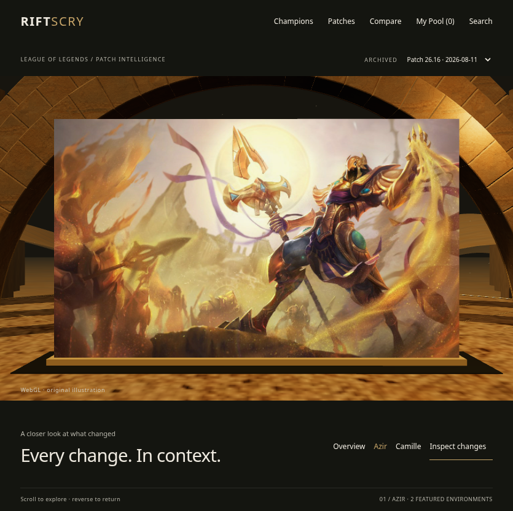
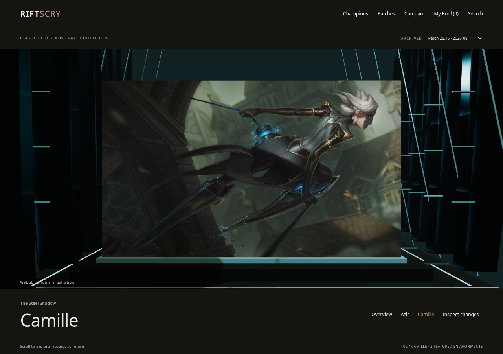
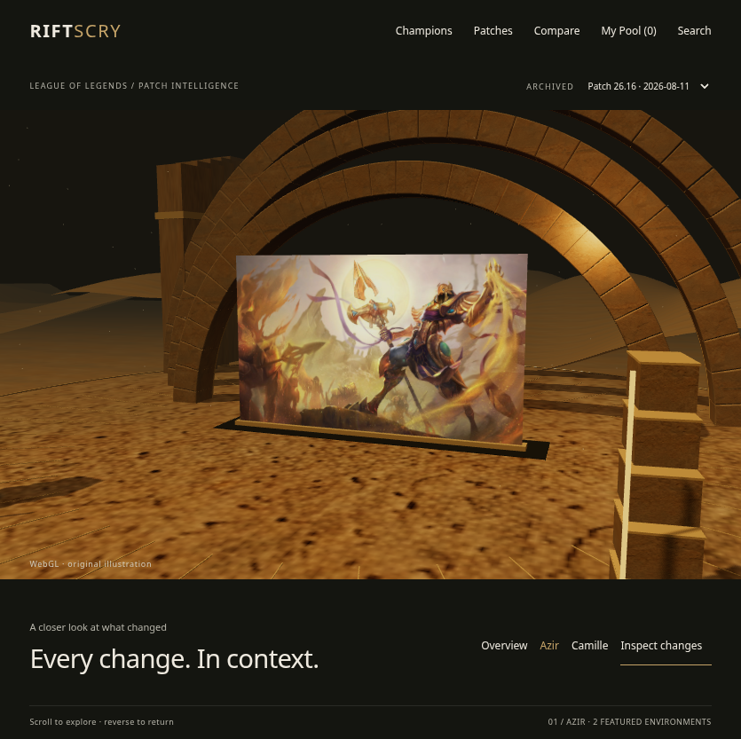
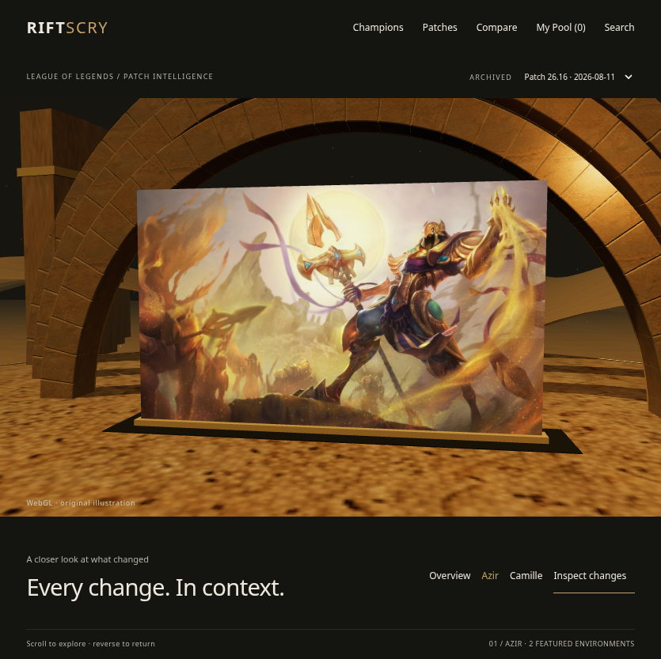
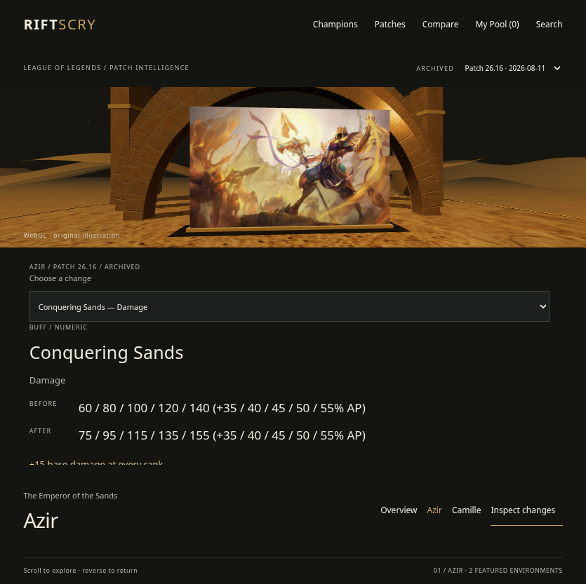
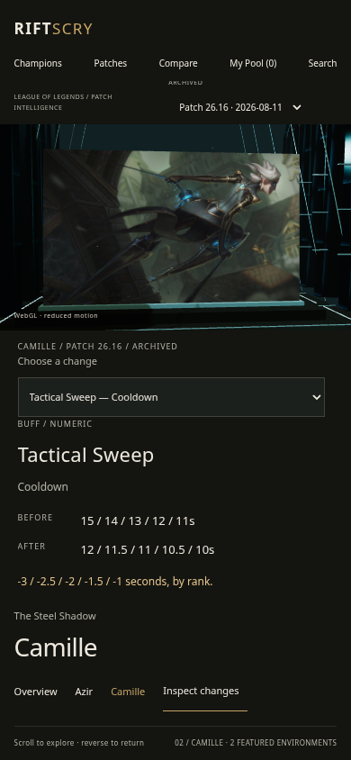
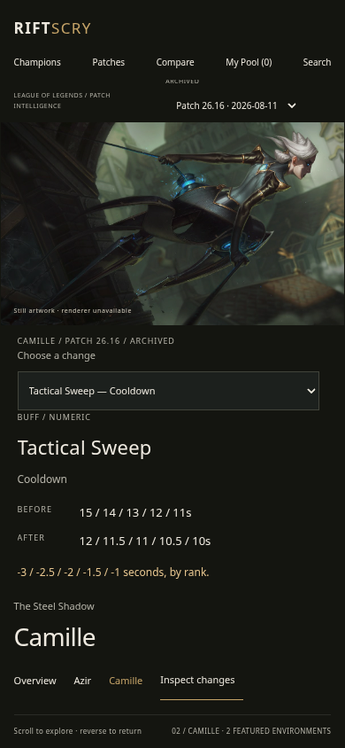

Source-art framing review
Protected region: the entire 1215 × 717 source in both cases. No extracted figure, silhouette mask, anatomy repair, or close-up exception. Source images are displayed unchanged below.




Production implementation, intact original artwork, native-scroll camera travel. Recordings below use Chromium’s SwiftShader software WebGL renderer in the sandbox—not a physical GPU.
Open experience · Asset, rights and shot register · Measured motion performance
The hosted preview was unavailable during implementation. These recordings were captured against the local production build. Software-renderer measurements do not establish acceptable physical-device performance or final creative acceptance.
Normal motion · WebGL · 835 × 833. Stable camera after settling, independently moving atmosphere.
Normal motion · WebGL · 835 × 833. Native scroll position determines camera pose; the recording pauses and reverses before continuing.



Normal motion · WebGL · 1280 × 900. Camille selection, full values, save/reload, browser history, patch selection and saved identities.
Protected region: the entire 1215 × 717 source in both cases. No extracted figure, silhouette mask, anatomy repair, or close-up exception. Source images are displayed unchanged below.




Riot artwork remains subject to Riot’s policies. Developer registration and any commercial authorization require owner review; no individual asset license approval is asserted.